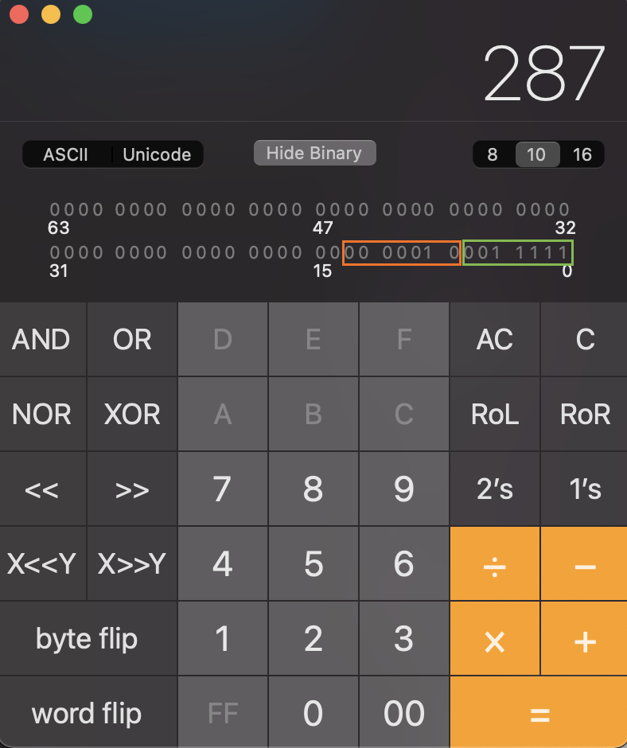
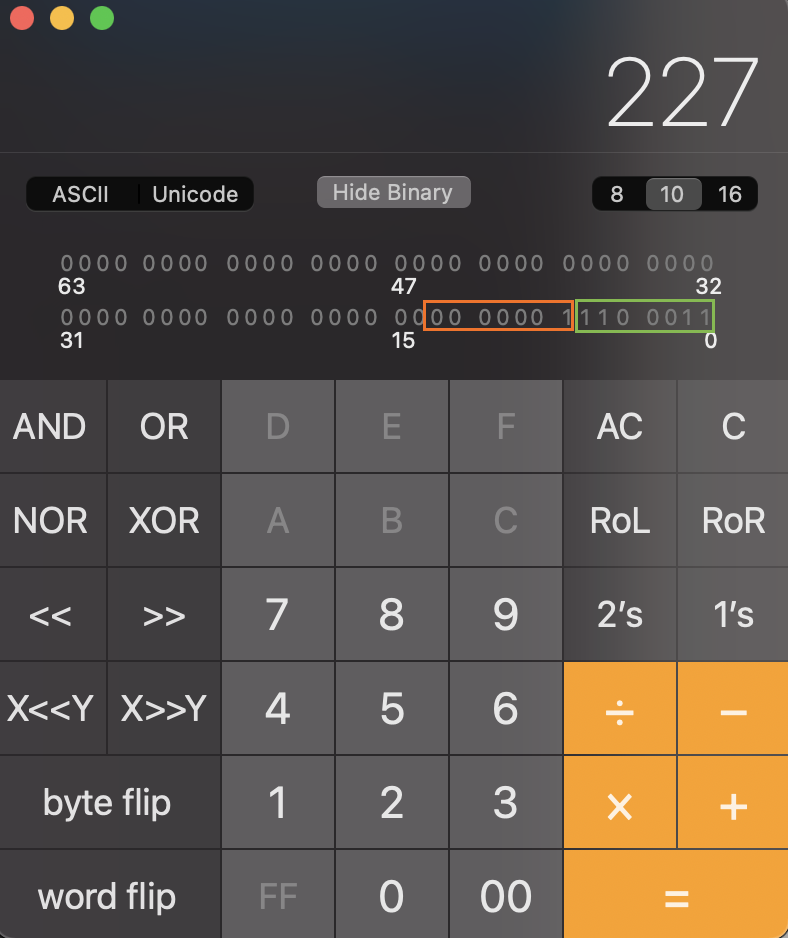

VarInt
Is used to safe memory. For example, number 5 only occupies 1 byte, but 1032 will need two bytes to live. They are also little-endian values. But how to tell when the number ends? Easy, the most significant bit of every byte (byte being the smallest space occupied) tells the PC whether there are more bytes to come. So, for example, the following is the number 5, just five, no caveats:
0 0 0 0 0 1 0 1
Say, now we need to encode the decimal number 287. In the mormal world with no weird stuff and the one we are all probably used to already, this would look like this in binary:
0 0 0 0 0 0 0 1 0 0 0 1 1 1 1 1
But VarInts are split into 7-bit chunks, each starting with either 0 if this chunk is the last or 1 if there are more chunks to go. This looks something like a metadata. So, instead of 8 bits for actual data, we have only 7, leaving each 8th bit for metadata (read the next byte or not). Splitting up the above value will leave us with the following chunks of data:
🍊 0 0 0 0 0 1 0 (marked orange on the screenshot) and 🍏 0 0 1 1 1 1 1 (marked green on the screenshot).

Since VarInts are little-endian, 🍏-chunk is read the first, so we need to reverse the order of the above chunks.
🍏 0 0 1 1 1 1 1 🍊 0 0 0 0 0 1 0
We also need to specify that the number is more that 1 byte long (i.e. there are more chunks than just 🍏 one) and put a 1 meta-bit at the beginning to tell the system that the next byte needs to be read as well.
1🍏 0 0 1 1 1 1 1 🍊 0 0 0 0 0 1 0
🍊-chunk is the last, no bytes to follow. Thus, we put 0 into 🍊 meta-bit. So, at last, we have the following number in binary:
1🍏 0 0 1 1 1 1 1 0🍊 0 0 0 0 0 1 0
If we were to convert this into an ordinary int, i.e. decimal in the ordinary world, this number would be interpreted as 40705 (big-endian) and 415 (little-endian), when in reality it is supposed to be 287. So, know whom to feed these VarInt to! Not everyone might get them 😔.
Let’s now do the same operation but in the reverse order!
Say, we have a number 0xE301 (1 1 1 0 0 0 1 1 0 0 0 0 0 0 0 1) and we need to know what’s the decimal value of this bigotry 🧙.
Let’s divide this binary into two 8-bit chunks:
🍏 1 1 1 0 0 0 1 1 and 🍊 0 0 0 0 0 0 0 1. Let’s read the first leftmost bit of the 🍏 digit: 1. That means, we need to take 🍊 into account as well. So, getting rid of the 🍏 and 🍊 meta-bits (since we have already processed them), we have these 14 bits left:
🍏 1 1 0 0 0 1 1 and 🍊 0 0 0 0 0 0 1. Since VarInt is little-endian, let’s switch the above digits: 🍊 0 0 0 0 0 0 1 and 🍏 1 1 0 0 0 1 1. Now, lets convert 1 (🍊) 1 1 0 0 0 1 1 (🍏 ) to decimal as a whole: 227:

So, the basic algorithm would be:
- Read the first (leftmost bit of each byte). If the bit is set to
1- add the number to the array for processing. - Reverse the order of the bytes to process.
- For each byte to process, read the remaining 7 bits and concatenate into one big value.
- Convert this binary into decimal for the ordinary world of
ints.
The code for this operation is listed below (Python 🐍) [1], I only have fixed a little bug in the pseudocode from the link:
result = 0
idx = 0
is_32_bit = True
limit = 5 if is_32_bit else 10
buffer = [0xe3, 0x1]
while idx < limit:
# (buffer[idx] & 0x7f, 0x7f is a mask 0111 1111. Applying AND with this mask clears the first bit of a byte (the one that tells whether to read the next byte or not). We do that so that this byte is not considered when calculating the actual value
# << (idx * 7) - we shift each byte processed so that it is put on its place (i.e. reversing the order step)
result |= ((buffer[idx] & 0x7f) << (idx * 7))
# 0x80 is 1000 0000 mask which when applied to a number, converts it to the following pattern: either 00000000 or 10000000, depending on whether the leftmost bit was set to 1.
if buffer[idx] & 0x80 == 0:
break
idx += 1
print(result)
ZigZag
Since VarInt is not good for negative numbers, Google came up with another encoding: ZigZag. Why such a strange name?
| int value (raw) | Value in ZigZag |
|---|---|
| 0 | 0 |
| 1 | -1 |
| 2 | 1 |
| 3 | -2 |
| 4 | 2 |
The code for this operation is listed below (Python 🐍) [1]:
raw = 0x3
is_negative = raw & 0x01 > 0
result = raw >> 1
if is_negative:
result = -result
print(result)
BigInteger
Read a varint; the least significant bit gives you the sign of the number (1 for negative). Bit-shift the value left 4 bits; this shifted value tells you how many unsigned integers to read – 32-bit integers on 32-bit systems, 64-bit bit integers on 64-bit systems. Take the concatenated value and read it with the endianness of the system. [1]
References
[1] IndexedDB on Chromium